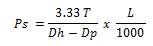

Method 1
- Determine n :
- Determine K :
- Determine velocity (ft/min):
For plugged flow :
For open pipe :
- Maximum pipe velocity :
Vm = 1.5 x v
- Determine pressure losses :
Nomenclature :
N = dimensionless
K = dimensionless
θ 600 = 600 viscometer dial reading
θ 300 = 300 viscometer dial reading
v = fluid velocity (ft/min)
Vp = pipe velocity (fi/min)
Vm = maximum pipe velocity (ft/min)
Ps = pressure loss (psi)
L = pipe length (ft)
Dh = hole diameter (inch)
Dp = drill pipe or drill collar OD (inch)
Di = drill pipe or drill collar ID (inch)
Case 1 : Determine surge pressure for plugged pipe :
Data : Well depth = ft
Hole size = in.
Drill pipe OD = in.
Drill pipe ID = in.
Drill collar = ID
Drill collar length = ft
Mud weight = ppg
Viscometer readings :
θ 600 =
θ 300 =
Average pipe running speed = ft/min
- Determine n :
- Determine K:
- Determine velocity (ft/min):
- Determine maximum pipe velocity (ft/min) :
- Determine pressure loss (psi):
Therefore, this pressure is added to the hydrostatic pressure of the mud in the wellbore.
If, however, the swab pressure is desired, this pressure would be subtracted from the hydrostatic pressure.
Case 2 : Determine surge pressure for open pipe :
Therefore, this pressure would be added to the hydrostatic pressure of the mud in the wellbore.
If, however, the swab pressure is desired, this pressure would be subtracted from the hydrostatic pressure of the mud in the wellbore.
Method 2
Surge and swab pressures
Assume : 1. Plugged pipe
2. Laminar flow around drill pipe
3. Turbulent flow around drill collars
These calculations outline the procedure and calculations necessary to determine the increase or decrease in equivalent mud weight (bottomhole pressure) due to pressure surges caused by pulling or running pipe. These calculations assume that the end of the pipe is plugged (as in running casing with a float shoe or drill pipe with bit and jet nozzles in place), not open ended.
-
A. Surge pressure around drill pipe :
- Estimated annular fluid velocity (v) around drill pipe :
- Maximum pipe velocity (Vm):
Vm = v x 1.5
- Calculate n :
- Calculate K :
- Calculate the shear rate (Ym) of the mud moving around the pipe :

- Calculate the shear stress (T) of the mud moving around the pipe :
- Calculate the pressure (Ps) decrease for the interval : 
-
B. Surge pressure around drill collars :
- Calculate the estimated annular fluid velocity (v) around the drill
Collars :
- Calculate maximum pipe velocity (Vm):
Vm = v x 1.5
- Convert the equivalent velocity of the mud due to pipe movement to
equivalent fìowrate (Q):
- Calculate the pressure loss for each interval (Ps):
-
C. Total surge pressure converted to mud weight :
Total surge (or swab) pressures :
psi = Ps (drill pipe) + Ps (drill collars)
-
D. If surge pressure is desired :
- Calculate annular fluid velocity (v) around drill pipe :
- Calculate maximum pipe velocity (Vm):
- Calculate n :
- Calculate K :
- Calculate the shear rate (Ym) of the mud moving around the pipe :
- Calculate the shear stress (T) of the mud moving around the pipe :
- Calculate the pressure decrease (Ps) for the interval :
- Calculate the estimated annular fluid velocity (v) around the drill
- Calculate maximum pipe velocity (Vm):
- Convert the equivalent velocity of the mud due to pipe movement to
- Calculate the pressure loss (Ps) for the interval :
SP (ppg) = Ps ÷ 0.052 ÷ TVD (ft) “+” MW (ppg)
SP (ppg) = PS ÷ 0.052 + TVD (ft) “—“ MW (ppg)
Case : Determine both the surge and swab pressure for the data
Listed below :
Data : Mud weight = ppg
Plastic viscosity = cps
Yield point = sq ft
Hole diameter = in.
Drill pipe OD = in.
Drill pipe length = ft
Drill collar OD = in.
Drill collar length = ft
Pipe running speed = ft/min
-
A. Around drill pipe :
NOTE : Determine n and K from the plastic viscosity and yield point as Follows : PV + YP = θ 300 reading θ300 reading + PV = θ 600 reading Sample Case :
PV =
YP =
-
B. Around drill collars :
collars :
equivalent flowrate (Q):
-
C. Total pressures :
-
D. Pressure converted to mud weight (ppg):
-
E. If surge pressure is desired :
-
F. If swab presure is desired :